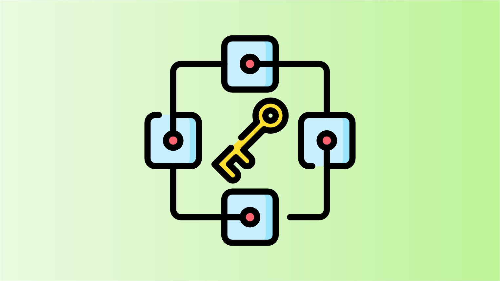

Explore the latest methods in fair transaction ordering in blockchain technology on this webpage. We provide concise summaries of state-of-the-art techniques that aim to ensure fairness and efficiency in transaction processing. Learn about the innovative approaches being developed to maintain the integrity of digital transactions in the blockchain ecosystem.
Optimized trade execution schemes are the least invasive approach to prevent front-running. These approaches adjust the trade parameters to make potential front-running attacks unprofitable. Thus, these schemes have negligible impact on the underlying blockchain system but are limited in scope.
Instead of utilizing an automated market maker, these approaches introduce a professional market maker to handle trades and are expected to execute them at market price. Generally, these approaches involve off-chain agreements on exchange rates and on-chain transaction execution.
Trusted third party ordering refers to schemes that entrust a trusted third party with the ordering. Transactions are sent directly to the trusted third party who then orders them. Thus, these schemes order transactions efficiently while compromising decentralization and security.
In algorithmic committee ordering schemes, a committee oversees the transaction ordering. Transactions are sent directly to the committee and the committee agrees upon a fair ordering through consensus. Generally, these approaches can handle less than one third of the committee members being byzantine.
The on-chain commit & reveal approaches order transactions in two phases. In the first phase, users commit to their transactions by broadcasting their encrypted transaction which is included on-chain. In the second phase, after some time the transaction is either decrypted automatically once the private key becomes available or by the users themselves.
Off-chain commit & reveal protocols order transaction in two phases. In the first phase, users send their transactions to a committee. The committee then agrees on an order through consensus. In the second phase, once the order is agreed upon, the committee decrypts the transaction with their threshold signatures.
This page is mantained by the Distributed Computing group at ETH Zürich. We are not liable for any false information.
Copyright © 2023 Distributed Computing Group, ETH Zürich